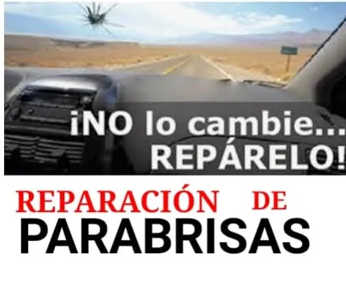
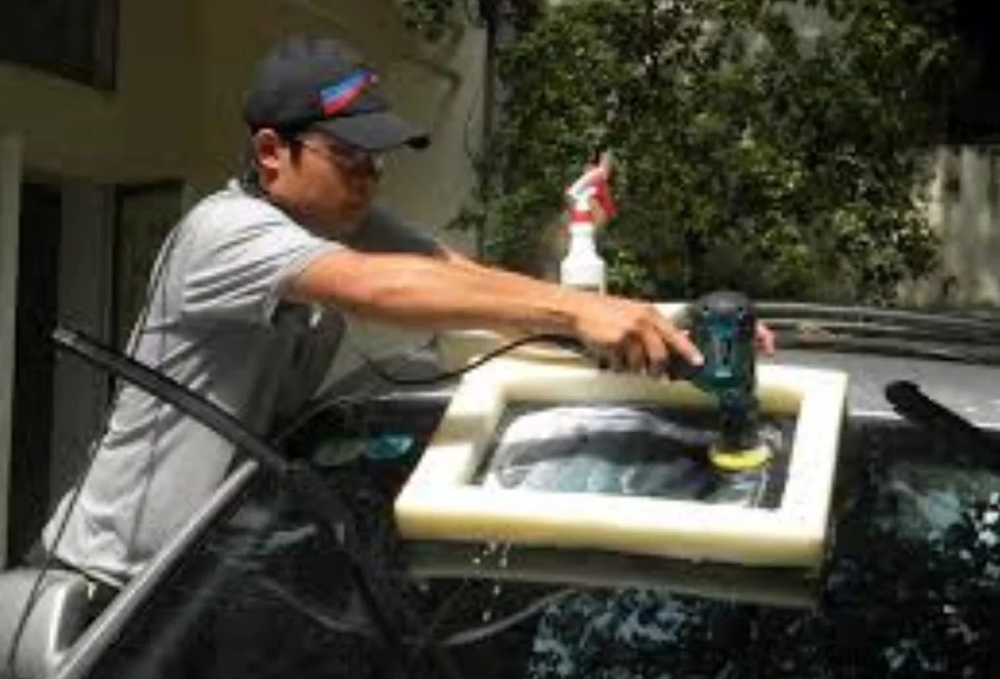
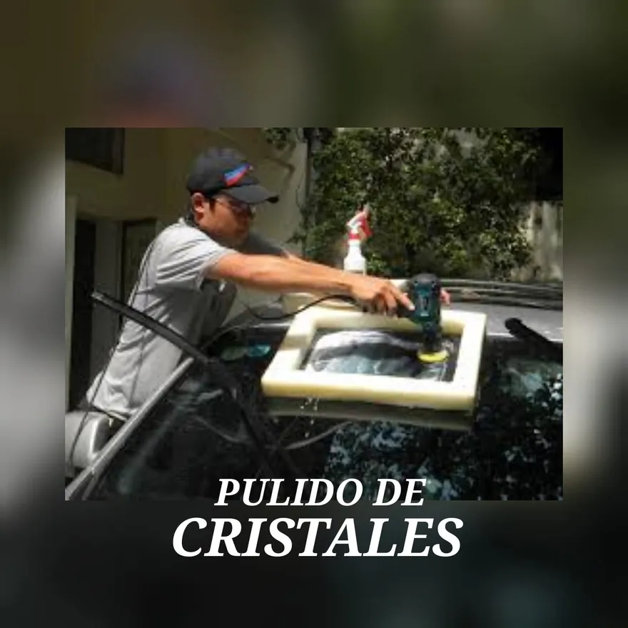
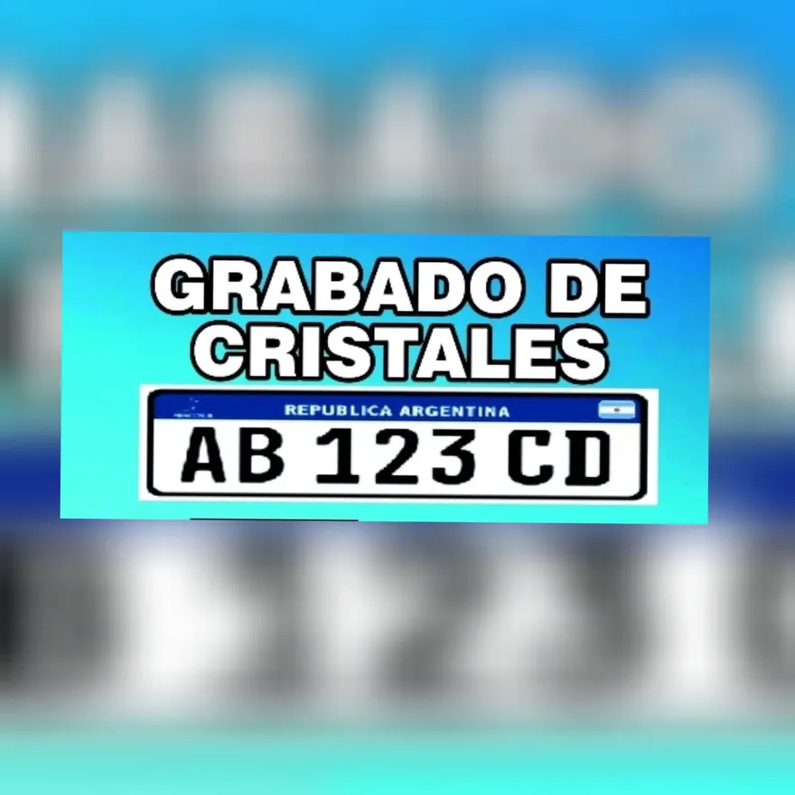
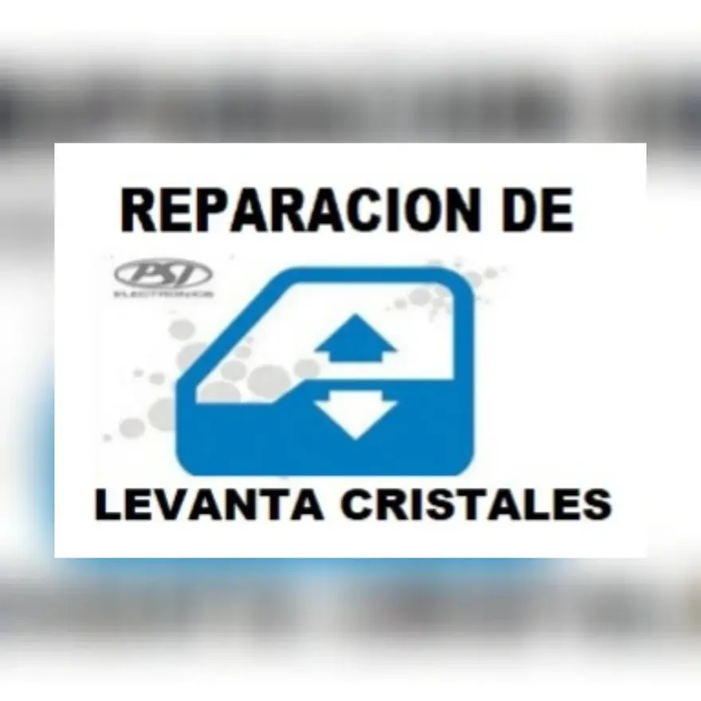
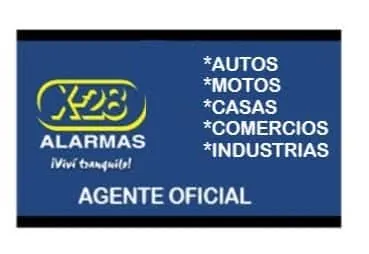

Reparación de parabrisas
Si el parabrisas recibió un impacto, mandanos una foto del daño para consultar si se puede reparar.
ConsultarLa Rioja capital
Reparamos parabrisas, levantacristales y cierres centralizados. También hacemos pulido y grabado de cristales y trabajamos con alarmas X-28.

Elegí un servicio para consultarnos directamente por WhatsApp.

Si el parabrisas recibió un impacto, mandanos una foto del daño para consultar si se puede reparar.
Consultar
Consultanos por pulido si el cristal del auto tiene rayas superficiales o marcas.
Consultar
Grabado de la patente en los cristales del vehículo. Escribinos para coordinar.
Consultar
Si una ventanilla no sube, no baja o se traba, contanos qué falla y qué modelo de vehículo tenés.
ConsultarSi el cierre centralizado responde de forma intermitente o una puerta queda sin trabar, contanos qué pasa.
Consultar
MF Multiservicios
Escribinos por WhatsApp y contanos qué servicio necesitás. Si es por tu vehículo, podés incluir el modelo y una foto.